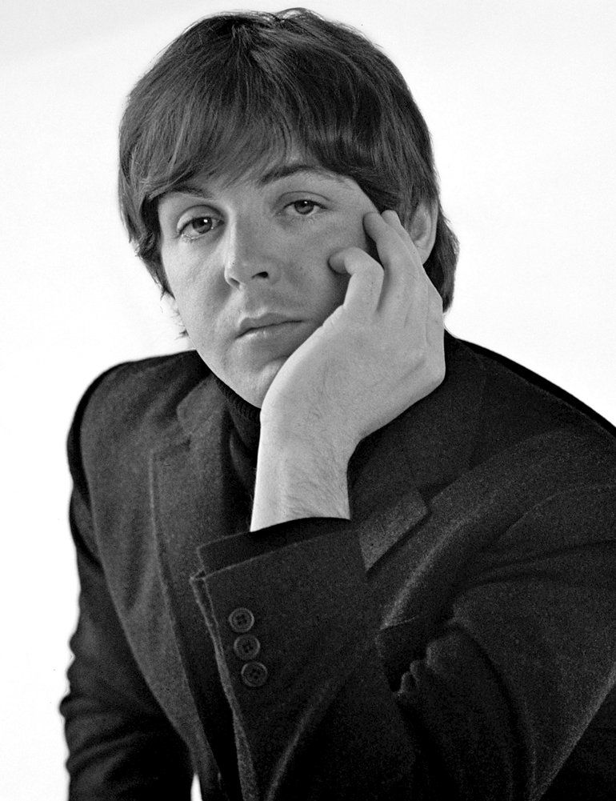
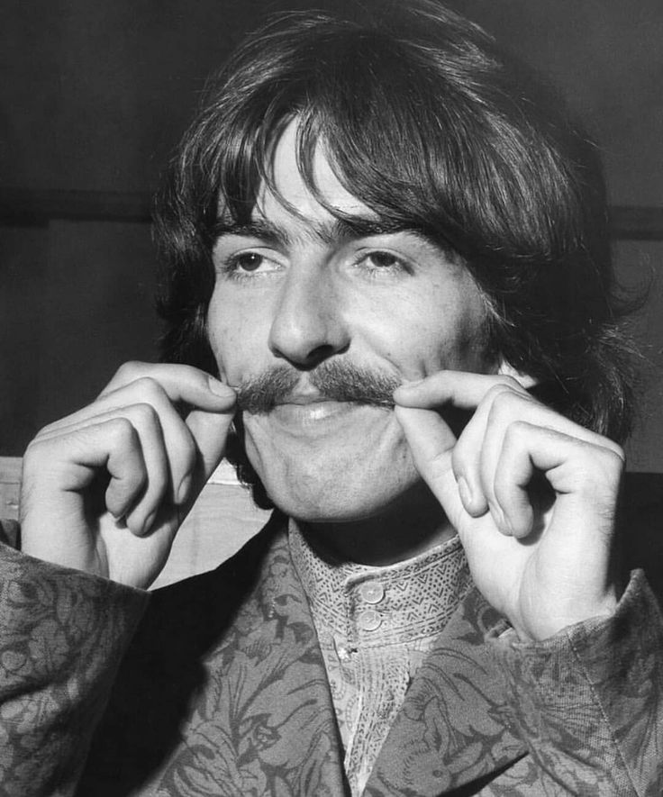
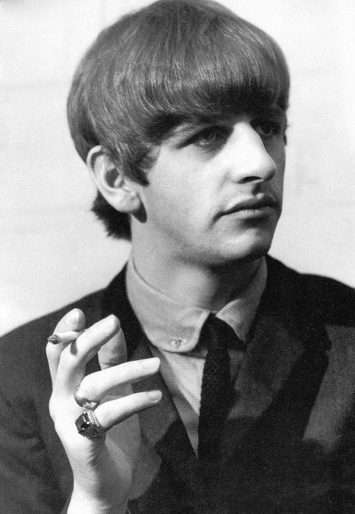

Название:"The Beatles" ("Битлз";отдельно участников ансамбля называт "битлами")
СтранаВеликобритания (г.Ливерпуль)
Годы:1960-1970
Состав группы(те, кого весь мир знает как The Beatles):
Джон Ленон(ритм-гитара, соло-гитара, клавишные, бубен, маракасы, бас-гитара, губная гормошка, вокал)

Пол Макартни(бас-гитара,клавишные, ударные, гитара, вокал)
Джордж Харрисон(соло-гитара, ритм-гитара, ситар, бубен, клавишные, вокал)
Ринго Стар(ударные, ритм-гитара, бубен, маракасы, коубелл, бонги, клавишные, вокал)
Пит Бест(ударные, вокал)
Стюарт Станклифф(бас-гитара, вокал)
Джимми Никол(ударные)
Также в разное время в составе группы выступали:
После распада группы, произошедшего в 1970 году, каждый из её участников начал сольную карьеру.